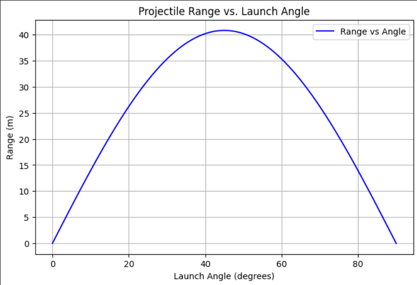
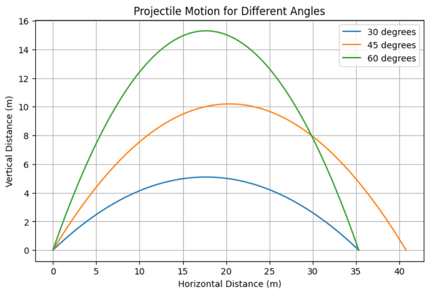

Projectile Motion: Theoretical and Computational Analysis
1. Theoretical Foundation
Projectile motion follows Newton’s laws of motion. Assuming no air resistance, the motion can be decomposed into horizontal and vertical components.
Governing Equations
From kinematic equations: - Horizontal motion: [ x = v_0 \cos\theta \cdot t ] - Vertical motion: [ y = v_0 \sin\theta \cdot t - \frac{1}{2} g t^2 ]
where: - ( v_0 ) is the initial velocity - ( \theta ) is the launch angle - ( g ) is the gravitational acceleration - ( t ) is time
Time of Flight
The time to reach the ground (( y = 0 )): [ t_f = \frac{2 v_0 \sin\theta}{g} ]
Range Equation
The horizontal range ( R ) is given by: [ R = \frac{v_0^2 \sin 2\theta}{g} ]
2. Analysis of the Range
The range depends on the launch angle ( \theta ), initial velocity ( v_0 ), and gravitational acceleration ( g ). The optimal angle for maximum range is ( 45^\circ ).
Let's visualize this with Python.
import numpy as np
import matplotlib.pyplot as plt
g = 9.81 # gravity (m/s^2)
v0 = 20 # initial velocity (m/s)
theta = np.linspace(0, 90, 100) # angles in degrees
# Convert angles to radians
theta_rad = np.radians(theta)
# Compute range
R = (v0**2 * np.sin(2*theta_rad)) / g
# Plot
plt.figure(figsize=(8, 5))
plt.plot(theta, R, label='Range vs Angle', color='b')
plt.xlabel('Launch Angle (degrees)')
plt.ylabel('Range (m)')
plt.title('Projectile Range vs. Launch Angle')
plt.legend()
plt.grid()
plt.show()

3. Practical Applications
Projectile motion applies to: - Sports (e.g., basketball, soccer) - Military applications (trajectory of missiles) - Engineering (ballistic flight paths)
4. Implementation
import numpy as np
import matplotlib.pyplot as plt
def projectile_motion(v0, theta, g=9.81):
theta_rad = np.radians(theta)
t_flight = (2 * v0 * np.sin(theta_rad)) / g
t = np.linspace(0, t_flight, num=100)
x = v0 * np.cos(theta_rad) * t
y = v0 * np.sin(theta_rad) * t - 0.5 * g * t**2
return x, y
# Simulate for different angles
angles = [30, 45, 60]
plt.figure(figsize=(8, 5))
for angle in angles:
x, y = projectile_motion(20, angle)
plt.plot(x, y, label=f'(angle) degrees')
plt.xlabel('Horizontal Distance (m)')
plt.ylabel('Vertical Distance (m)')
plt.title('Projectile Motion for Different Angles')
plt.legend()
plt.grid()
plt.show()

Discussion
The idealized model assumes no air resistance, which isn't realistic for long-range motion. A more advanced model would incorporate drag force ( F_d = \frac{1}{2} C_d \rho A v^2 ) to account for air resistance.
Conclusion
This study provides insight into projectile motion, demonstrating theoretical derivations and computational simulations. The next step would be incorporating wind resistance and varying terrains for a more realistic analysis.